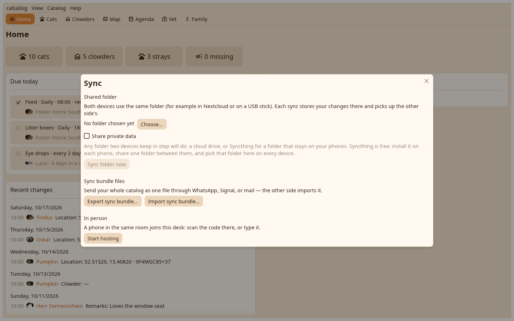

The desk syncs the way the phones do: through the shared folder, as a bundle, or in person, where it hosts and a phone joins.

Choose the folder once; from then on a line at the top says whose changes wait, and the switch merges them on their own. A folder the phones share is read as it is; the desk writes its own segments beside theirs. The folder is watched while the app is on screen.
Start hosting shows the pair code as a QR and as text with the PIN; a phone joins as it joins another phone. The desk serves only while the modal is open, over its own certificate.
Export bundle writes a .catsync file where you say, with or without private values. Import bundle, or a double-click on a .catsync file, reads one into the open catalog.
After a round the arrival window lists what came, per cat and home, with the conflicts to settle in it.